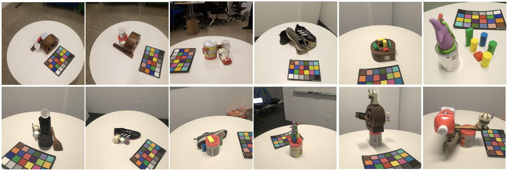
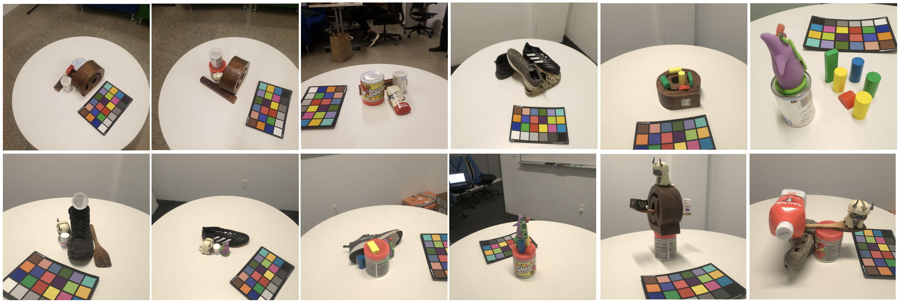

Dataset
We introduce a new benchmark for 3D scene decomposition techniques, consisting of 30 real-world scenes and 5 synthetically generated ones. The scenes contains different combinations of objects in close contact, and we provide a high-quality complete mesh of each object. Previous scene decomposition techniques evaluate their methods on benchmark datasets like Replica and ScanNet. A critical limitation of these is that they do not offer complete ground truth geometries for the reconstructed objects. More specifically, per-object meshes are extracted from the full ground truth mesh of the indoor scene by cropping the ground truth mesh with the semantic masks and therefore lack completeness in regions occluded by other objects.
 
